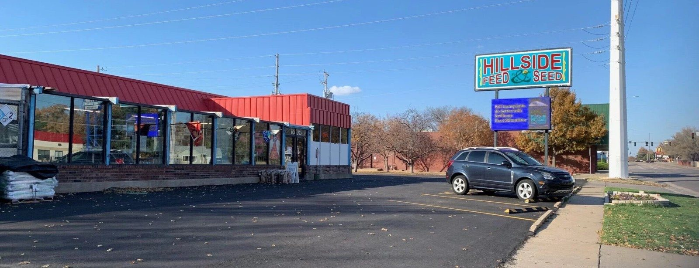

Growing with Wichita
A farm store the city grew up around.
The store started as a farm store on the fringes of the city. As Wichita grew, the neighborhoods wrapped around it, and it now feels like it was always part of the landscape. Originally it offered only the standard farm store fare, but over the years the "And" grew to cover a little bit of everything, from gardening supplies to jams, jellies and candy.
Hillside Feed and Seed opens its doors in a building at 1623 S. Hillside.
The Sander family buys the business, and it has been family owned and operated ever since.
The store moves to its present home at 1805 S. Hillside and the next generation joins.
Five generations of Sanders have worked here, feeding furry and feathered friends and helping growers of every skill level, while supporting local non-profits and small businesses.